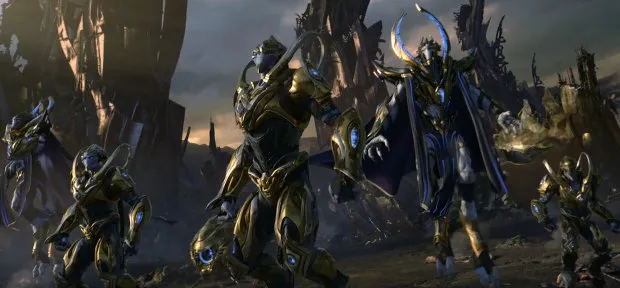

프로토스는 고도로 발달한 외계 종족이다. 
수도 행성은 아이어이며, 젤나가의 프로토-유전자 실험 대상 종족이였다. 그러나 그들은 너무 자만심에 빠진 나머지, 젤나가들을 공격했고 타락한 젤나가 아몬은 그들이 서로 끝없이 싸우도록 한다. 이를 끝없는 전쟁이라고 부른다.[1] 그러나 사바산은 칼라를 발견하고 프로토스를 칼라 네트워크에 접속시켜 끝없는 전쟁을 종식하도록 만들었다. 그들은 이를 통해 엄청나게 발달하였다. 끝없는 전쟁의 과정에서는 탈다림들이라는 프로토스 분파가 아몬을 찾아서 떠나고, 네라짐 프로토스들이 칼라를 거부해서 서로 분단되는 일도 있었다. 그런 프로토스 중 정화자라는 대의회가 만든 궁극의 무기는 기계로 된 로봇병사들이다. 대의회는 그런 프로토스를 단순한 전쟁병기로 생각했고 정화자들은 그 얘기를 듣고 아이어의 프로토스를 학살하고 행성 앤디온 위쪽 사이브로스 안에 이주했다.